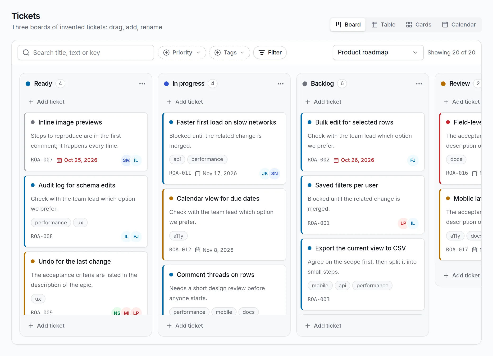
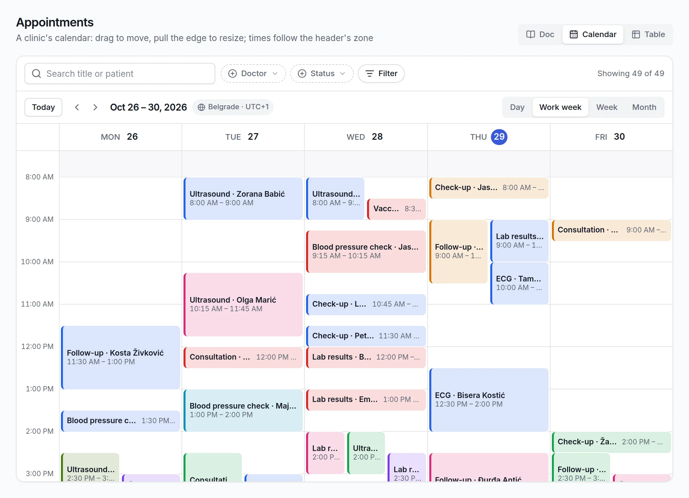
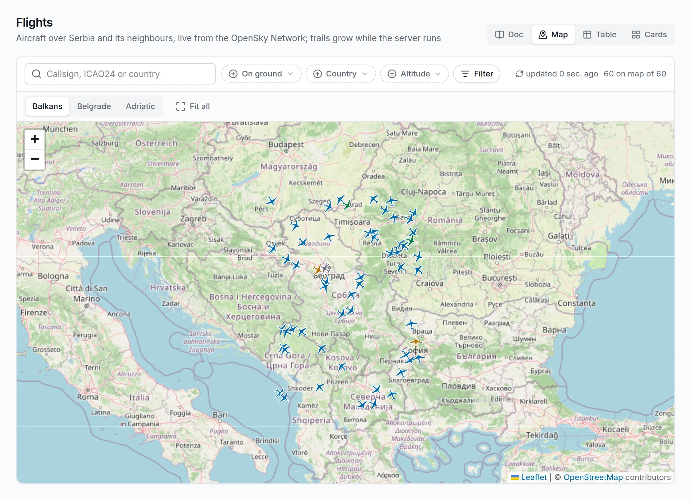
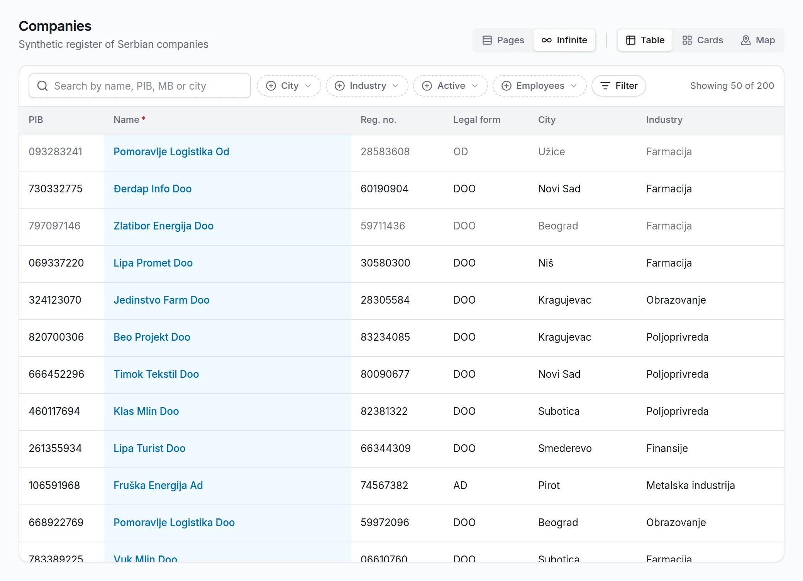

Describe a collection. Get the whole data UI.
A collection is three small files: its fields in schema.json, how it looks in view.yaml, where its rows live in source.yaml. The server answers for it over one JSON protocol, and the React data view draws it with search, filters, inline edits and a schema editor.
schema.json the fields
{
"fields": {
"name": { "type": "string" },
"description": { "type": "text" },
"language": { "type": "string" },
"stargazers_count": {
"type": "integer", "min": 0 },
"pushed_at": { "type": "datetime" },
"topics": { "type": "string_array" },
"archived": { "type": "bool" }
}
}
view.yaml how it is shown
default_renderer: cards available_renderers: [cards, table, chart] search: fields: [name, description] filters: - { field: language, kind: select } - { field: archived, kind: bool } columns: - { field: name, pin: left, width: 220 } - { field: language, render: badge } chart_options: { type: pie, category_field: name, value_field: stargazers_count }
source.yaml where rows live
kind: http_api options: base_url: https://api.github.com list_endpoint: /users/digital-cube/repos id_field: name field_map: owner_avatar: owner.avatar_url cache_ttl_ms: 300000 # or postgres_jsonb, memory, # filesystem, yaml_menu; with no # source.yaml, a Postgres table
Seven renderers and a schema editor, from one line of YAML
Real screenshots of the live example. Each view lists the renderers it offers; the data view draws one tab per name.

tickets/view.yaml
appointments/view.yaml
flights/view.yaml
companies/view.yamlOne protocol, both sides
@jsudc/core is the contract: every request and every answer is a Zod-validated envelope. The server imports it to check what arrives; the client imports it to check what comes back. Swap either side for your own and the other does not notice.
Every action is POST /udc/<action>: describe, list, read, mutate, and schema edits that add, change or retire a field at runtime.
POST /udc/list
{ "collection": "repos",
"filter": { "field": "language", "op": "eq", "value": "TypeScript" },
"sort": [{ "field": "stargazers_count", "dir": "desc" }],
"page": { "limit": 60 } }{ "kind": "udc.list.ok",
"payload": { "rows": [ … ], "next_cursor": "eyJvIjo2MH0", "total": 45 } }Start where you are
import Fastify from "fastify"; import { createDispatcher, loadRegistry, makeSource, udcPlugin } from "@jsudc/server"; const registry = loadRegistry("./collections", (asset, reg) => makeSource(asset, { registry: reg, env: process.env }), ); const app = Fastify(); await app.register(udcPlugin, { dispatcher: createDispatcher(registry), registry }); await app.listen({ port: 5100 });
npm install @jsudc/server @jsudc/core fastify zod- Put a
books/directory undercollections/with aview.yaml, aschema.jsonand asource.yamlofkind: memory. - Run it, then ask it:
curl localhost:5100/udc/list -d '{"collection":"books"}'
Three packages, one version line
The protocol: envelopes, the filter language and its evaluator, the schema, view and source types, row validation, and the transport client.
npmv0.1.1Dispatcher, registry, five sources, the schema store and its revisions, seeding, and a Fastify plugin with the OpenAPI of every action.
npmv0.1.1The data view, seven renderers, the schema editor, hooks over TanStack Query, a headless layer, and a stylesheet you restyle with CSS variables.
npmv0.1.1